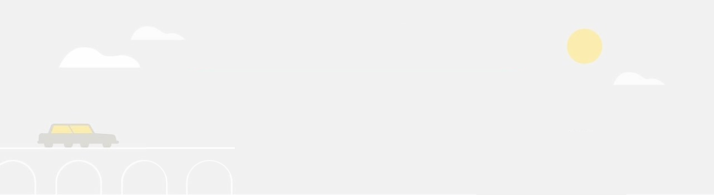
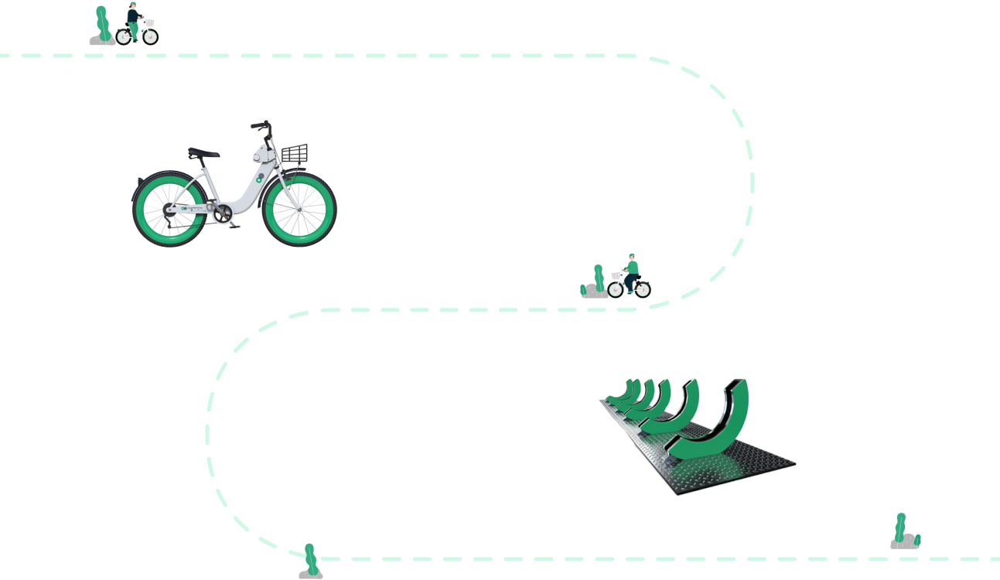

따릉이

따릉이 대여소
서울자전거를 대여하고 반납할 수 있는
무인 정류장 형태
의 자전거 거치 시설
대여소 위치
대여소는 지하철 출입구, 버스정류장, 주택단지, 광공서, 학교, 은행 등 접근이 편리한 주변 생활시설 및 통행장소를 중심으로 운영하고 있습니다. 대여소가 설치된 곳이면 어디에서나 '따릉이 앱'을 통해 서울 자전거를 대여하고 반납할 수 있습니다.
대여소
43,500
개소
따릉이
2,850
개


자전거
누구나 이용할 수 있는 자전거로, 내구성이 강한 소재와 고급기어를 사용하여 주행 안정성과 편의성을 취우선으로 제작하였습니다.
거치대
거치대는 자전거를 안전하게 세워 보관하는 시설이며, 따릉이 고유 색상과 형태를 지녀 복잡한 서울 시내에서 쉽게 눈에 띄도록 제작되었습니다.